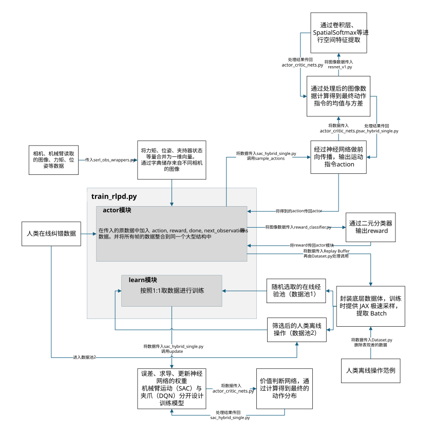

系统梳理 HIL-SERL 论文的核心思想、架构设计与训练流程， 分析其与主流方案的优劣，并探索持续学习（CL）的结合路径。
真实世界的复杂组装任务（皮带安装、RAM 插入、双臂协作）包含复杂接触动力学、 高维状态-动作空间与长视距决策需求，要求策略同时具备精密闭环反应控制与精细开环动作能力。

ImageNet 预训练 ResNet-10 处理多摄像头输入，保障优化稳定性
基于 RLPD 算法，融合人类演示数据与在线策略数据
探索中人类可随时修正动作，对攻克从零学习困难的任务至关重要
预收集成功/失败数据训练二元分类器，替代复杂奖励塑形
带限制命令层的阻抗控制器，保障在线随机探索时的物理安全
核心训练入口 train_rlpd.py 分为 actor 与 learn 两个并发模块，
实现"边运动边训练"以提升效率。
| 数据池 | 来源 | 质量筛选 |
|---|---|---|
| 数据池 1 | 机械臂自主探索数据（全体数据的子集） | 随机抽取 |
| 数据池 2 | 离线专家演示 + 在线人类纠错 | 打分系统过滤低质量样本 → 与在线纠错数据合并 |
| 方案 | 主要优点 | 主要缺点 |
|---|---|---|
| Sim-to-Real | 仿真数据成本极低，具备泛化潜力 | 依赖特权信息，接触动力学/光照/噪声的仿真鸿沟难以克服 |
| 交互式模仿学习 (HG-DAgger) |
人类专家数据快速启动 | 缺乏累积奖励优化，只能在当前策略附近探索，需持续频繁人工干预 |
| 模型+顺应机制 | 明确物理模型的窄任务上精确度极高 | 不包含视觉感知，大量手动开发，缺乏鲁棒性和适应性 |
| 扩散策略 | 表现力强，擅长记忆和复现复杂运动轨迹 | 闭环反应控制能力弱，表现力 ≠ 反应能力 |
| HIL-SERL（本文） | 现实世界直接训练（仅需 1-2.5h）· 超越人类执行速度 · 极强鲁棒性与自我纠错 · 不依赖仿真 | 新任务仍须从头训练；极复杂的超长视野任务可能需额外奖励塑形或层级学习 |
论文明确指出尽管训练速度快，但面对每个新任务仍需从头训练。 引入持续学习可赋予机器人累积操作技能的能力，迈向通用智能体。
预训练 ResNet-10 已为跨任务视觉特征提取提供良好基础，新任务可直接利用已固化的通用物理与几何表征。
通过 CL 正向迁移进行"热启动"，学习新任务所需的探索时间与人类纠偏干预将大幅减少。
灾难性遗忘 + 奖励分类器的任务特异性。如何构建跨任务通用奖励表征、避免"判别面漂移"是实现多阶段复杂任务的关键。
| 架构 | 原理 | 适配性 | 关键分析 |
|---|---|---|---|
| 经验回放 (Replay-based) |
保留历史任务核心样本，训练新任务时交替重放 | 高 ✅ | 原生双回放缓冲区（Demo Buffer + RL Buffer）与 RLPD 无缝衔接。 挑战：任务增多后采样配比设计复杂，数据存储存在算力/内存瓶颈。 |
| 正则化 (EWC) |
损失函数中增加惩罚项，限制对旧任务重要参数的更新幅度 | 低 ❌ | 内存友好，但过度强硬的参数约束会严重削弱网络学习细微反应式动作的可塑性， 与高精度接触式任务对策略网络的高适应力需求矛盾。 |
| 参数隔离 (Progressive Nets) |
为新任务增加新层/分支/专用 Head，冻结旧任务参数 | 中 ⚠️ | 可根除灾难性遗忘。建议设计："共享视觉主干 + 分离 Actor/Critic 输出头"。 但网络随任务线性膨胀可能影响 HIL-SERL 所需的 10Hz 高频闭环响应。 |
核心洞察：经验回放是 HIL-SERL 迈向持续学习的最优技术路径。 只需在共享回放池中保留旧任务的高质量人类演示与成功干预数据， 即可与现有的 RLPD 离策略框架无缝衔接，实现跨任务技能的正向迁移。